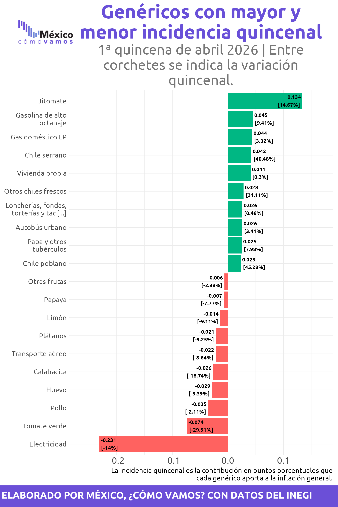
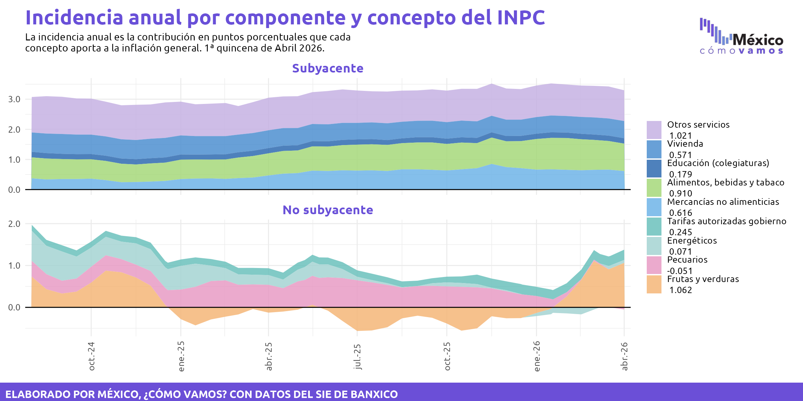
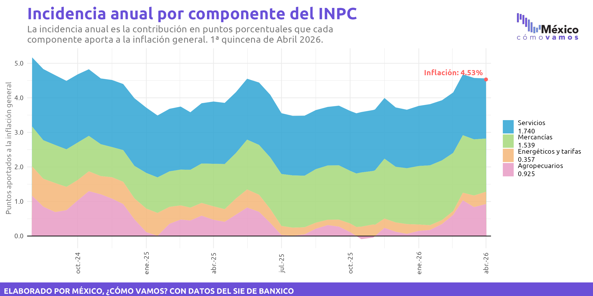

⬆️ Los genéricos con mayor incidencia quincenal en el alza de precios fueron jitomate, gasolina de alto octanaje y gas doméstico lp. ⬇️ A la baja fueron electricidad, tomate verde y pollo.

Caracteres: 188 / 280
⬆️ Los genéricos con mayor incidencia quincenal en el alza de precios fueron jitomate, gasolina de alto octanaje y gas doméstico lp. ⬇️ A la baja fueron electricidad, tomate verde y pollo.

Caracteres: 188 / 280
Los conceptos del Índice Nacional de Precios al Consumidor con mayor incidencia en la inflación anual observada son las frutas y verduras, otros servicios y los alimentos, bebidas y tabaco. Las frutas y verduras presentan además una variación anual de 23.0% en el nivel de precios.

Caracteres: 281 / 280
El principal componente de la inflación durante esta quincena fue el de servicios de la inflación subyacente, que aportó 1.7 puntos del 4.5% de la inflación anual de la 1ª quincena de abril (un 38.4% del total).

Caracteres: 211 / 280